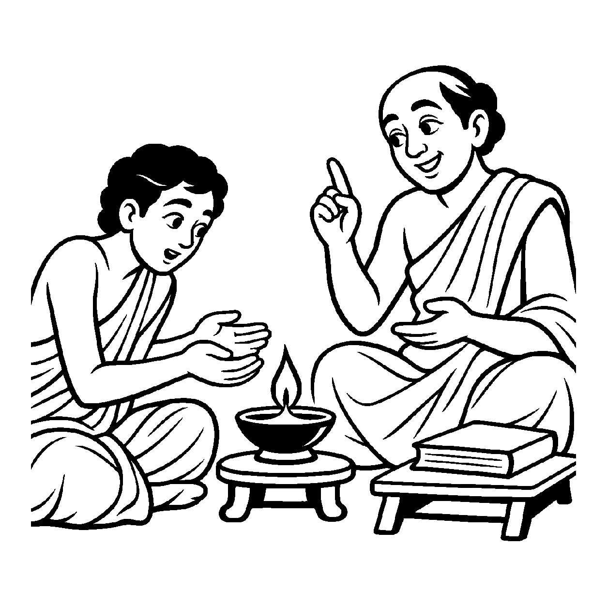

કોઈ વ્યક્તિ અગ્નિમાંથી તેની ગરમી કે પ્રકાશને ચીપિયા વડે પકડીને અલગ કરી શકતી નથી; જ્યાં અગ્નિ છે ત્યાં જ ઉષ્મા છે અને જ્યાં ઉષ્મા છે ત્યાં જ અગ્નિ છે. બંને વચ્ચે કોઈ અંતર કે દીવાલ નથી. તેવી જ રીતે જ્યારે આત્મા અને તેના ગુણો (જ્ઞાન, દર્શન, સુખ) વચ્ચે રહેલા કાલ્પનિક ભેદોને સર્વથા બાજુ પર મૂકીને, આત્મા પોતાના અનંત ગુણ-પર્યાયો સાથે સર્વથા અભિન્ન, તન્મય અને એકરસ છે તેવું જોવામાં આવે, ત્યારે તે 'ભેદકલ્પનાનિરપેક્ષ શુદ્ધ દ્રવ્યાર્થિકનય' કહેવાય છે.
વ્યવહારની ભાષામાં આપણે કહીએ છીએ કે "આત્માનો ગુણ જ્ઞાન છે", જેનાથી એવો ભ્રમ પેદા થાય છે કે આત્મા કોઈ માલિક છે અને જ્ઞાન કોઈ બહારની સંપત્તિ છે! આ શુદ્ધ દ્રવ્યાર્થિકનય આવી ભેદકલ્પનાઓનો છેદ ઉડાડે છે. તે સાબિત કરે છે કે દ્રવ્ય પોતાના ગુણોથી કોઈ જુદી વસ્તુ નથી; આત્મા સ્વયં જ્ઞાનરૂપ છે અને જ્ઞાન જ સાક્ષાત્ આત્મા છે.
આ નય સાધકને જ્ઞાતા અને જ્ઞાનના કૃત્રિમ ભેદોમાંથી મુક્ત કરીને સ્વયં ચૈતન્યમય બની જવાની પરમ સમાધિ બક્ષે છે.
ગુણ ગુણીના ભેદ વિના, અભિન્ન આતમ સાર;
ભેદકલ્પના પરહરી, શુદ્ધ નયે વિસ્તાર.
ગુણ અને ગુણીના માનસિક વિકલ્પો છોડી, અખંડ એકત્વરૂપ શુદ્ધ આત્મદ્રવ્યમાં લીન થવું.

તત્ત્વચિંતક શિષ્ય સોમિલ ગુરુકુળમાં આત્મા અને તેના ગુણોના સંબંધ પર ચિંતન કરી રહ્યો હતો. તેના મનમાં એક વિચિત્ર પ્રશ્ન જાગ્યો: "શાસ્ત્ર કહે છે કે 'આત્મામાં જ્ઞાન છે.' જો આત્મામાં જ્ઞાન રહેલું છે, તો શું આત્મા એક વાસણ છે અને જ્ઞાન તેમાં ભરેલું દૂધ છે? શું હું જ્ઞાનને આત્મામાંથી બહાર કાઢી શકું?" તે દિવસ-રાત ગુણ અને ગુણી વચ્ચેના સંબંધની આંટીઘૂંટીમાં અટવાઈ ગયો. તેને લાગતું હતું કે આત્મા કોઈ નિરાધાર પદાર્થ છે અને ગુણો તેના પર લદાયેલા છે. આ દ્વૈતની વિષમ ગૂંચવણમાં તેનું મન અશાંત બની ગયું અને તે માથું પકડી પોકારી ઊઠ્યો: "આ ગુણ અને ગુણીના ભેદનું આખરી સત્ય શું છે?"
તે જ સમયે ગુરુકુળના આચાર્યદેવે સોમિલને રસોડામાં લઈ જઈ એક સળગતો દીવો બતાવ્યો અને પૂછ્યું, "સોમિલ, આ દીવામાંથી પ્રકાશને કાઢીને તારી હથેળીમાં મૂકી આપ." સોમિલે વિનમ્રતાથી કહ્યું, "ગુરુજી, એ અસંભવ છે; દીવો પોતે જ પ્રકાશ છે, પ્રકાશ વિના કોઈ દીવો હોતો જ નથી!" ગુરુજીએ સ્મિત સાથે કહ્યું, "બસ, આ જ ભેદકલ્પનાનિરપેક્ષ શુદ્ધ દ્રવ્યાર્થિકનય છે. તું આત્મા અને જ્ઞાનને બે જુદી વસ્તુઓ માનવાની ભૂલ કેમ કરે છે? આત્મા પોતે જ જ્ઞાન છે અને જ્ઞાન પોતે જ આત્મા છે! ગુણ અને ગુણી વચ્ચે કોઈ અંતર નથી." ગુરુજીના આ અખંડ અભિન્ન બોધનું પાન કરતાં જ સોમિલના મનમાંથી ભેદનો ભ્રમ ભાંગી ગયો. તેના અંતરમાં આત્માની અખંડ પૂર્ણતા પ્રગટી અને તે પરમ શાંતિ પામ્યો.
જો આ નય કદાગ્રહ બને, તો મનુષ્ય જ્ઞાન, દર્શન, ચારિત્ર આદિ ગુણોના વિશિષ્ટ કાર્યો અને લક્ષણોનો જ ઈનકાર કરી બેસે છે. આવી એકાંત જડતાથી જીવ વર્તમાન વ્યવહારિક સાધના અને કર્તવ્યોની ઉપેક્ષા કરી બેસે છે અને ક્રમિક પરિણામોને સુધાર્યા વિના અકાળે પૂર્ણતાના મિથ્યા સંતોષમાં રાચે છે.
આ જ નય જ્યારે સમન્વયકારી બને છે, ત્યારે તે સાધકને વિકલ્પોની જાળમાંથી મુક્ત કરી પોતાના પરિપૂર્ણ ચૈતન્ય-સ્વભાવમાં લીન થવાની પરમ પ્રેરણા આપે છે.